🎮 Os jogos
Na tela inicial, o aluno toca em 🎮 Jogos e vê todos os jogos. O menu Categoria, no alto, filtra os jogos:
Português, Matemática, ABC, Inglês e Psicopedagogia.
Como o aluno começa
- Digita o primeiro nome e toca em Entrar ▶.
- Toca em 🎮 Jogos e escolhe um jogo (se quiser, filtra pelo tema).
- Escolhe para quem vai o relatório (só nos jogos do app).
- Joga! No fim, vê como foi, e o professor recebe o relatório.
💡 Os jogos com ↗ no cartão são de outros sites: abrem em outra aba e têm o próprio relatório, que não vem para o e-mail cadastrado aqui.
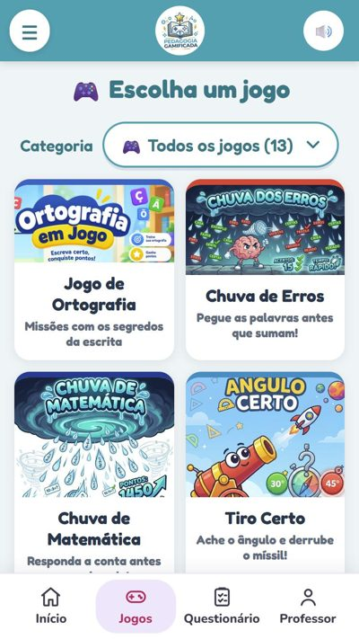
📚 Jogo de Ortografia
Português
Para que serve
- Treina as dúvidas mais comuns da escrita: S ou SS, Ç ou C, R ou RR, M ou N, G ou J, X ou CH e os acentos.
- Liga a figura, o som e a escrita da palavra (o aluno pode ouvir a palavra).
- Cada nível começa com o Segredo do Plenix, uma regra curta para o aluno entender o porquê.
- O relatório mostra ao professor quais palavras o aluno errou e o que revisar.
Como jogar
- Escolha o nível: Fácil (palavras curtas com figura), Médio (palavras do dia a dia) ou Difícil (palavras longas).
- Leia o Segredo do Plenix e toque em Começar ▶.
- Olhe a figura, toque em 🔊 Ouvir a palavra se quiser e escolha a letra que completa a palavra.
- Cada nível vale até 3 estrelas ⭐.
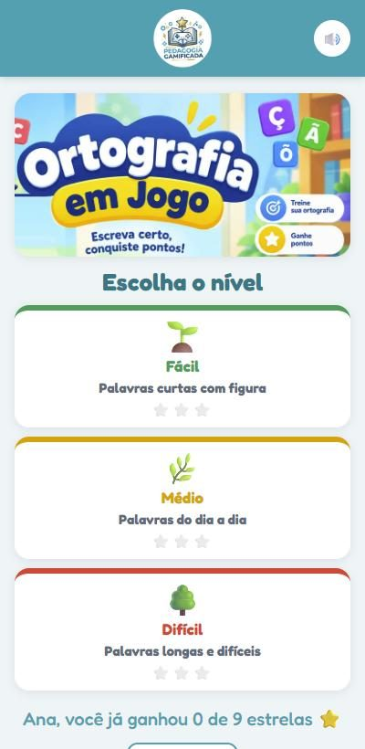
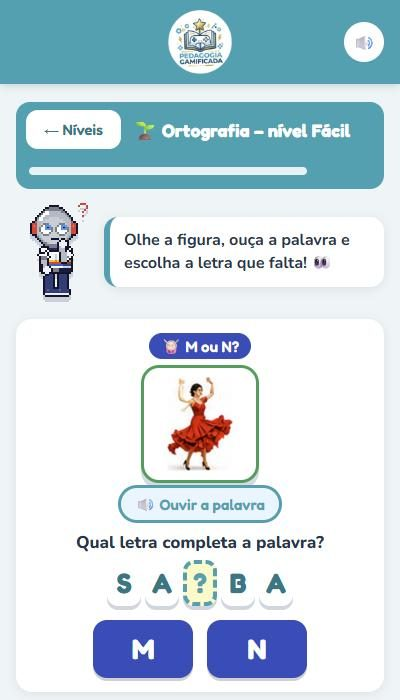
🌧️ Chuva de Erros
Português
Para que serve
- Ajuda a reconhecer rápido a forma certa de escrever as palavras.
- Treina a atenção, a leitura rápida e a percepção visual das letras.
- O aluno pode treinar só os casos que mais erra (escolhe o tipo de palavra).
Como jogar
- Escolha o que vai pegar: as palavras CERTAS ou as palavras ERRADAS.
- Escolha quais palavras vão cair (todas ou um tipo, como S/SS ou acentos) e toque em Começar ▶.
- As palavras caem do céu: toque só nas que você escolheu, antes que sumam.
- Quanto mais rápido você acerta, mais rápido elas caem. Acertos seguidos dão bônus!
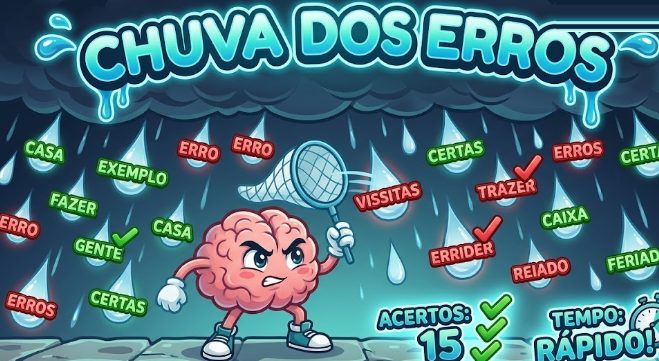
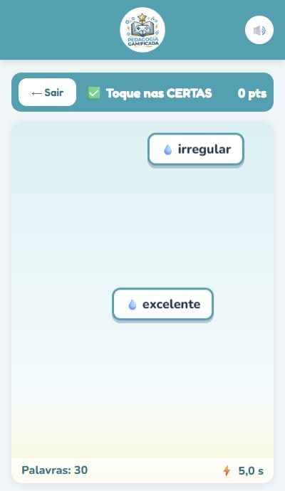
🔢 Chuva de Matemática
Matemática
Para que serve
- Desenvolve o cálculo mental e a rapidez nas quatro operações: adição, subtração, multiplicação e divisão.
- A dificuldade se ajusta ao aluno: sobe quando ele acerta e desce quando ele erra, então ninguém fica travado.
- O relatório mostra quais contas o aluno errou.
Como jogar
- Escolha quais contas vão cair e toque em Começar ▶.
- Uma conta cai de cada vez. Toque na resposta certa embaixo, antes que a conta chegue ao chão.
- São 20 contas. Acertou: a próxima fica mais difícil. Errou: fica mais fácil.
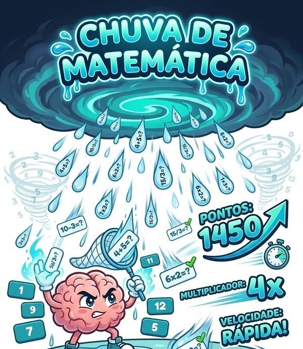
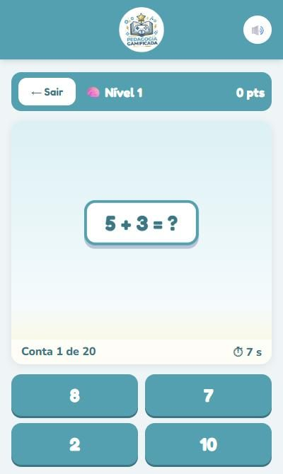
🎯 Tiro Certo
Matemática
Para que serve
- Ensina ângulos e o uso do transferidor de um jeito visual.
- Treina a localização no espaço e a estimativa de ângulos.
Como jogar
- O círculo é um transferidor: o canhão fica no 0° (à esquerda), o 90° em cima, o 180° à direita e o 270° embaixo.
- Um míssil aparece no círculo. Veja por qual ângulo ele está vindo.
- Toque no ângulo certo para o canhão derrubar o míssil.
- Você começa com 4 tiros e cada acerto vale +1 tiro. São 20 mísseis.
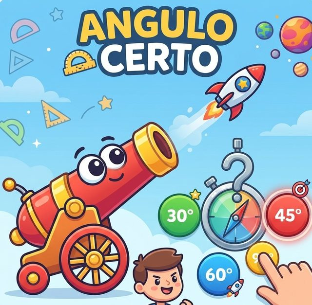
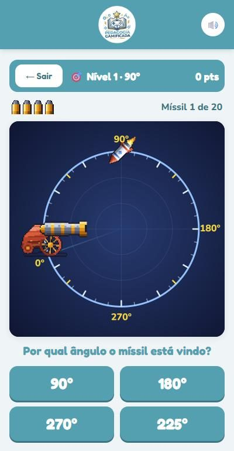
⚖️ Peso Certo
Matemática
Para que serve
- Trabalha as medidas de massa e a conversão de unidades: kg, hg, dag, g, dg, cg e mg.
- Treina a soma e a estimativa: o aluno precisa planejar antes de testar.
- Tem uma tabela de conversão para consultar durante o jogo.
Como jogar
- Escolha o nível e toque em Começar ▶.
- Um objeto aparece no prato da esquerda, com o peso dele.
- Toque (ou arraste) os pesos para o prato da direita até achar que equilibra.
- Toque em ⚖️ Testar. A balança só se mexe no teste! Errou? Perde uma vida ❤️ (são 3).
- Na dúvida, toque em 📏 Tabela. São 10 objetos por partida.
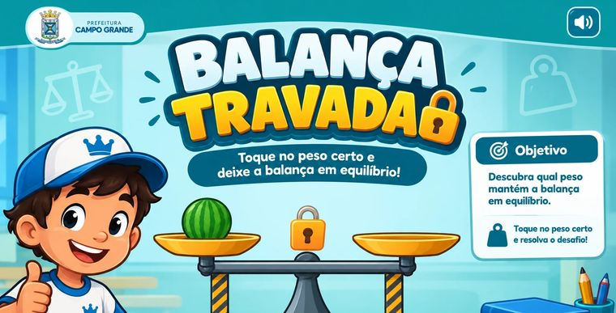
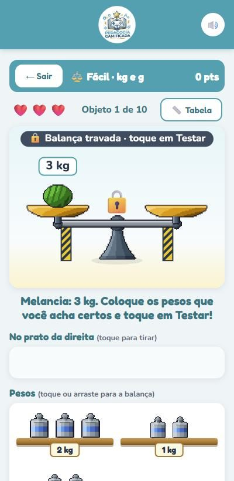
📝 Questionário da aula
Todas as matérias
Para que serve
- O professor revisa o conteúdo da aula com as próprias perguntas, de qualquer matéria.
- O aluno vê na hora se acertou, e o professor recebe o relatório com as perguntas para revisar com a turma.
Como jogar
- Abra pelo link que o professor mandou, ou toque em 📝 Questionário da aula na tela inicial e escolha o questionário.
- Leia a pergunta com calma e toque na resposta certa.
- Toque em Próxima ➜ até o fim e veja como foi.
💡 Como o professor cria e compartilha: veja os passos 7 a 10.
💡 Jogo do Reflexo
Psicopedagogia
Para que serve
- Treina a atenção, a memória de trabalho (guardar a ordem e quantas vezes cada cor piscou) e o reflexo.
- Junta visão e audição: cada lâmpada tem uma cor e um som diferentes.
- Exercita o controle da impulsividade: os botões ficam em outro lugar, então é preciso procurar a cor certa antes de tocar.
- A dificuldade se ajusta ao aluno: sobe quando ele acerta e desce quando ele erra.
- O relatório por e-mail é completo: tempo de resposta em cada rodada, tempo médio, resposta mais rápida e mais lenta,
nível máximo, tipos de erro (tocou a mais, tocou a menos, trocou a ordem, cor que não piscou) e se o aluno ficou mais rápido ou mais lento durante a partida.
Como jogar
- No alto ficam 4 lâmpadas (vermelha, amarela, verde e azul). Embaixo, 4 botões das mesmas cores, em outra ordem.
- Olhe e escute: as lâmpadas piscam. Por exemplo, a azul pisca 2 vezes.
- Quando aparecer "Sua vez!", toque no botão azul 2 vezes. Se piscarem várias cores, repita na mesma ordem.
- Acertou: o próximo desafio tem mais cores, mais piscadas e fica mais rápido. Errou: fica mais fácil.
- Quanto mais rápido responder, mais pontos. São 15 rodadas, com 8 níveis.
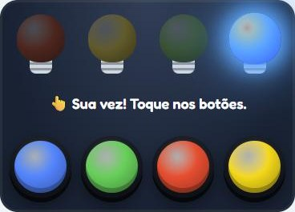
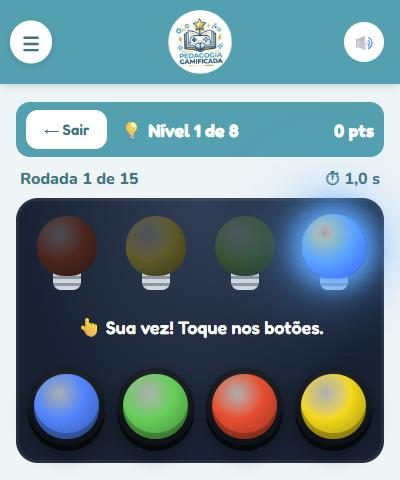
💡 Jogo do Reflexo Nível 2
Psicopedagogia
Para que serve
- Tudo o que o Jogo do Reflexo treina (atenção, memória, reflexo), com mais uma etapa: achar a bolinha certa e levar ao copo certo.
- Trabalha a coordenação olho-mão e a motricidade fina (arrastar com o dedo) e o planejamento da ação.
- Exige mais controle inibitório: lâmpada, copo e bolinha da mesma cor nunca ficam um embaixo do outro.
- O relatório por e-mail é o mesmo do Jogo do Reflexo, com um erro a mais: bolinha no copo de outra cor.
Como jogar
- No alto, 4 lâmpadas; no meio, 4 copos; embaixo, 4 filas de bolinhas. Cada fila mostra 2 bolinhas: quando uma sai, aparece outra.
- Olhe e escute: por exemplo, a lâmpada azul pisca 2 vezes.
- Na sua vez, arraste 2 bolinhas azuis até o copo azul. Se piscarem várias cores, faça na mesma ordem.
- Prefere sem arrastar? Toque na bolinha e depois no copo.
- Acertou: fica mais difícil e os copos e as bolinhas mudam de lugar. Errou: fica mais fácil. Quanto mais rápido, mais pontos.
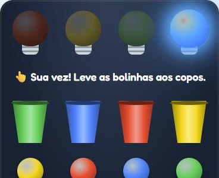
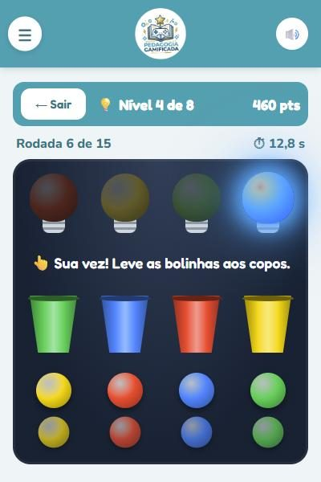
🧩 Rotina Certa
Psicopedagogia
Para que serve
- Treina a sequência e o planejamento (funções executivas): o que vem primeiro, no meio e por último.
- Usa tarefas do dia a dia da criança: tomar banho, almoçar, ir para a escola, fazer um bolo, escovar os dentes e a hora de dormir.
- Ajuda na autonomia: a criança organiza na cabeça as etapas da própria rotina.
- O relatório mostra quantas tentativas cada rotina precisou, o tempo para ordenar e qual passo ela trocou de lugar.
Como jogar
- Aparece uma rotina (ex.: Tomar banho) com os passos embaralhados numa pilha de botões.
- Arraste os botões para cima ou para baixo até ficarem na ordem certa. Sem arrastar: toque em dois botões para eles trocarem de lugar.
- Toque em ✔ Testar a ordem. Os passos certos ficam verdes e presos; os vermelhos você arruma de novo (até 3 tentativas).
- Acertou de primeira: a próxima rotina tem mais passos (de 3 até 6). Precisou de ajuda: a próxima fica mais curta.
- São 6 rotinas por partida. Quanto mais rápido e com menos tentativas, mais pontos.
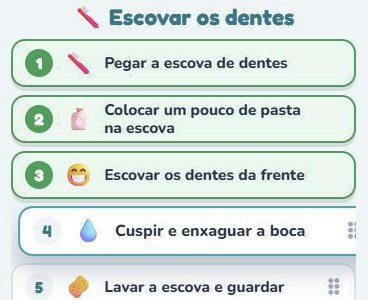
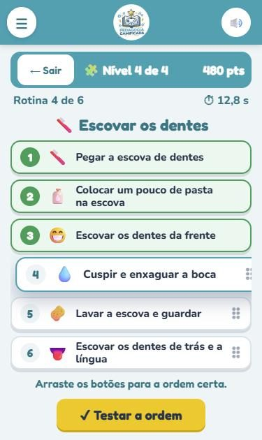
🔴 Fichas Coloridas
Matemática e Psicopedagogia
Para que serve
- Ensina a agrupar e trocar: 3 vermelhas viram 1 azul e 3 azuis viram 1 amarela. É a mesma ideia de juntar 10 unidades em 1 dezena (valor posicional).
- Treina o cálculo (vermelha vale 1, azul vale 3, amarela vale 9) e a multiplicação por 3.
- Exercita a atenção e o planejamento: antes de passar a vez, é preciso conferir se ainda dá para trocar.
- O relatório mostra as trocas, os esquecimentos e as contas de pontos, inclusive o erro comum de contar as fichas sem olhar o valor de cada cor.
Como jogar
- Escolha o nível: Fácil (cartelas de 1 a 3, vence com 1 amarela), Médio (1 a 6, 2 amarelas) ou Difícil (1 a 9, 2 amarelas).
- Na sua vez, toque em 🃏 Tirar cartela: você ganha esse número de fichas vermelhas.
- Toque em 3 fichas iguais: elas se juntam e viram 1 ficha da cor seguinte.
- Quando não der mais para trocar, toque em ✔ Pronto. Nos níveis Médio e Difícil, responda quantos pontos você tem.
- Depois é a vez do Plenix. Vence quem juntar as amarelas primeiro!
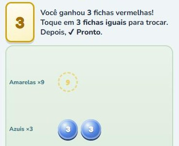
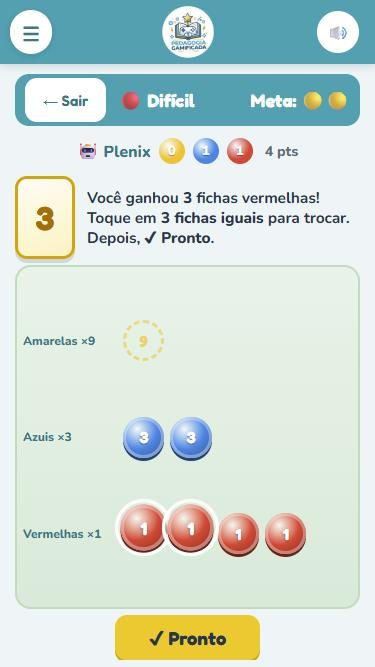
Jogos de outros sites ↗
Estes jogos abrem em outra aba. Cada um pede o nome do aluno de novo e tem o próprio relatório, que fica com o profissional responsável pelo jogo.
🔤 ABC da Tia Ana
ABC, Português e Psicopedagogia · outro site ↗
Para que serve
- Apoia a alfabetização: o aluno monta palavras com letras e sílabas.
- Liga a figura à palavra escrita e treina a ordem das letras.
- O relatório mostra o tempo em cada letra ou sílaba e as maiores dificuldades.
Como jogar
- Digite o nome e toque em JOGAR.
- Olhe a figura e arraste cada letra até o lugar certo para formar a palavra.
- A partida tem tempo (2 minutos): monte o máximo de palavras que conseguir.
- No fim, o relatório pode ser enviado para a Tia Ana ou baixado em PDF.
🌎 Desafio da Rotina (My Day)
Inglês · outro site ↗
Para que serve
- Ensina o vocabulário da rotina em inglês: acordar, tomar café, ir à escola…
- Treina a leitura e a tradução nos dois sentidos (português ↔ inglês).
Como jogar
- Digite o nome e toque em Let's go ▶.
- Escolha o modo: PT ➜ EN (a agenda vem em português e você escolhe a frase em inglês) ou EN ➜ PT.
- Escolha o nível: Fácil (frases curtas) ou Difícil (frases completas) e um personagem.
- Abra a agenda e escolha a frase certa para cada horário do dia.
- No fim do dia: pontuação, acertos, erros e a correção (dá para baixar em PDF).
🧠 Desafio das Peças com a Nágila
Psicopedagogia · outro site ↗
Para que serve
- Trabalha o raciocínio, o planejamento e a estratégia: pensar antes de mover.
- Ajuda a observar a atenção e a impulsividade (o tempo que o aluno leva para pensar em cada jogada).
- O relatório traz as habilidades observadas. São indicadores para apoiar a profissional, não um diagnóstico.
Como jogar
- Digite o nome e escolha: Fácil, Médio ou Difícil contra a Nágila, ou 2 jogadores.
- O objetivo é levar todas as suas peças para o outro lado.
- Ande pelas linhas, uma bolinha por vez. Não pode pular nem comer peça.
- Toque na sua peça e depois na bolinha que brilha (ou arraste). O seu relógio só anda na sua vez.
🐝 Hive (Colmeia)
Psicopedagogia · outro site ↗
Para que serve
- Desenvolve a estratégia e a capacidade de prever a jogada do outro.
- Treina o pensamento espacial, o respeito às regras e a tomada de decisão.
Como jogar
- Jogue com 2 jogadores no mesmo aparelho ou contra a máquina.
- O objetivo é cercar os 6 lados da Abelha Rainha do adversário. E não deixar a sua ser encurralada!
- Na sua vez, coloque uma peça nova ou mova uma peça do tabuleiro. Cada bicho anda de um jeito:
abelha 🐝, besouro 🪲, gafanhoto 🦗, aranha 🕷️ e formiga 🐜.
- A peça nova só pode encostar nas peças da sua cor. A Rainha tem que entrar até a sua 4ª jogada.
- Nenhum movimento pode separar a colmeia em duas partes.